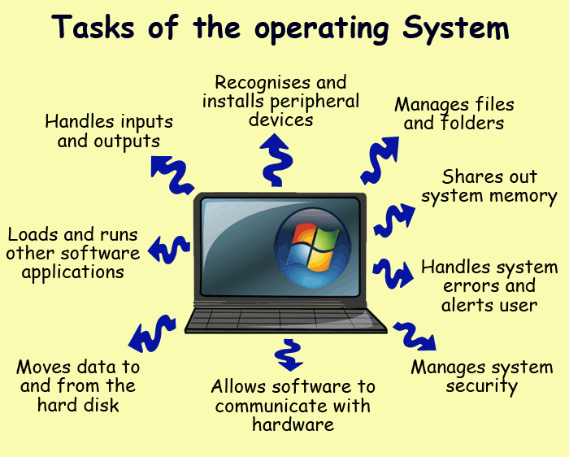

Operating Systems
Table of content
An operating system (OS) is the most important software that runs on a computer. It manages the computer's memory and processes, as well as all of its software and hardware. It also allows you to communicate with the computer without knowing how to speak the computer's language. Without an operating system, a computer is useless
- concepts of OS and it's departments
- History of operating systems
- Operating system tasks
- Operating Systems Classification
Operating systems have multiple tasks and functions related to computer operations and control of its components, physical devices and accessories. We can define the most important tasks of the operating system in the following points:
- Control the data path: The operating system transfers data inside the computer from one unit to another, and it organizes the exchange of it between the different units of the device. It also organizes data operations and software operations, and maintains detailed information about its size and places for storing it.
- Download the application software: One of the important tasks of the operating system is to download the application software to the memory from the attached units or from the storage media associated with the computer. The process of downloading the software is to transfer it from the storage media to the main memory and then to the processing unit in preparation for its implementation. Home - if the program is not always a resident software - to allow the download and implementation of other application software.
- Control of the main memory unit: Some operating systems are characterized by implementing more than one program at the same time, or for more than one user to work on the computer. In these cases, the responsibilities of the operating system include the operations of distributing the main memory to more than one user in the case of more than one user If more than one user is connected to the computer via terminals.
- Control of input and output units: This includes the operations of controlling data entry through the keyboard, mouse or others, and the processes of displaying information on the screen or sending it to the printer or any other units.
- Communication with the user: The operating system organizes the method of confrontation with the user of the device, and through this the user of the computer can follow the programs that are implemented, see the notes that the computer shows on the screen, and also issue orders to direct the computer to do the appropriate tasks.
- Fault detection: When any malfunctions occur in one of the components of the computer, the operating system automatically runs a series of malfunction detection programs ..... etc.
It can be said that the primary operating system task is to manage (i.e. organization and control) the computer hardware to carry out the various tasks of users.
